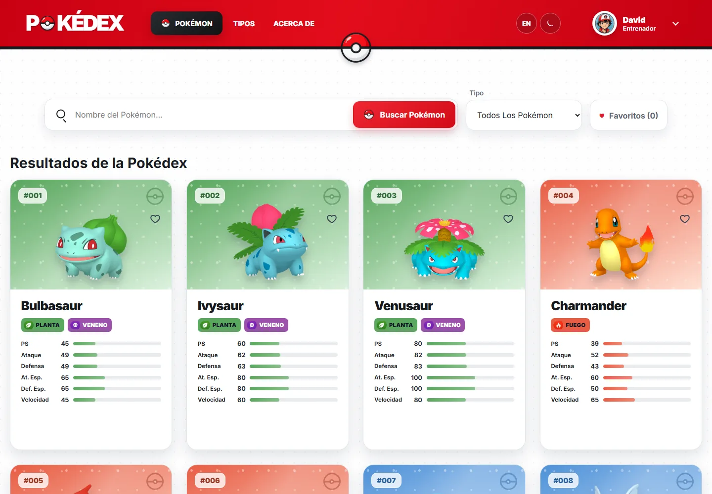
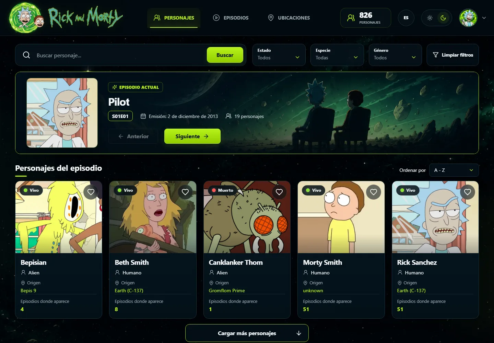
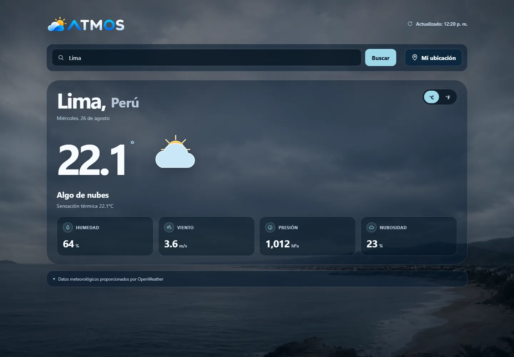

Sitios web profesionales
Presencia digital clara para negocios, profesionales, empresas e instituciones.
Hola, soy David Castillo
Creo sitios web modernos y adaptables para presentar tus servicios, fortalecer tu presencia digital y facilitar el contacto con tus clientes.
const developer = {
name: "David Castillo",
brand: "DavidDevX",
stack: [
"JavaScript", "React",
"Node.js"
],
mindset: "seguir aprendiendo"
};
function buildFuture(idea) {
return learn(idea).build();
}01 / SERVICIOS
Una presencia digital clara, adaptable y pensada para facilitar el contacto con tus clientes.
Presencia digital clara para negocios, profesionales, empresas e instituciones.
Páginas enfocadas en presentar servicios, productos o campañas específicas.
Actualización, optimización y evolución de sitios web existentes.
02 / SOBRE MÍ
Soy egresado de Ingeniería de Industrias Alimentarias por la Universidad Nacional de Frontera (2026). Llegué a la programación por curiosidad, sin planearlo, y terminó por gustarme: encontré un trabajo que disfruto, concentrado y tranquilo frente al monitor, resolviendo un problema a la vez.
Durante seis meses de formación como estudiante en Academlo aprendí y trabajé con HTML, CSS, JavaScript, React y Node.js. Actualmente también incorporo PostgreSQL a mi stack y continúo fortaleciendo esas bases a través de proyectos prácticos, tanto en frontend como en backend.
No vengo de un recorrido tecnológico tradicional, y esa es una de mis fortalezas: combino pensamiento analítico, curiosidad y una visión orientada a procesos.
Soluciones comprensibles, ordenadas y pensadas para evolucionar.
De tropezar con mis primeros hooks a resolver el estado de una app con confianza: cada proyecto suma una lección nueva.
La tecnología tiene valor cuando resuelve una necesidad real.
03 / TECNOLOGÍAS
Una base enfocada en desarrollo web, en crecimiento constante.
Estructura semántica
Diseño responsive
Interacción y lógica
Interfaces por componentes
JavaScript del lado servidor
Bases de datos relacionales
04 / PROYECTOS

Proyecto destacado 01
Explorador multiversal 02
Búsqueda y geolocalización 0305 / TRAYECTORIA
Mi recorrido combina formación en ingeniería y experiencia práctica en tecnología.
Ingeniería de Industrias Alimentarias, con formación analítica, enfoque en procesos y resolución de problemas.
Formación como estudiante en desarrollo web utilizando HTML, CSS, JavaScript, React y Node.js.
Desarrollando proyectos propios y buscando oportunidades de empleo y proyectos freelance.
06 / CONTACTO
Cuéntame qué necesitas construir o mejorar. Puedes compartir el tipo de negocio, el objetivo del sitio y las páginas o funcionalidades principales para preparar una conversación inicial.
hectordavidcastillobailon@gmail.comDisponible para trabajar